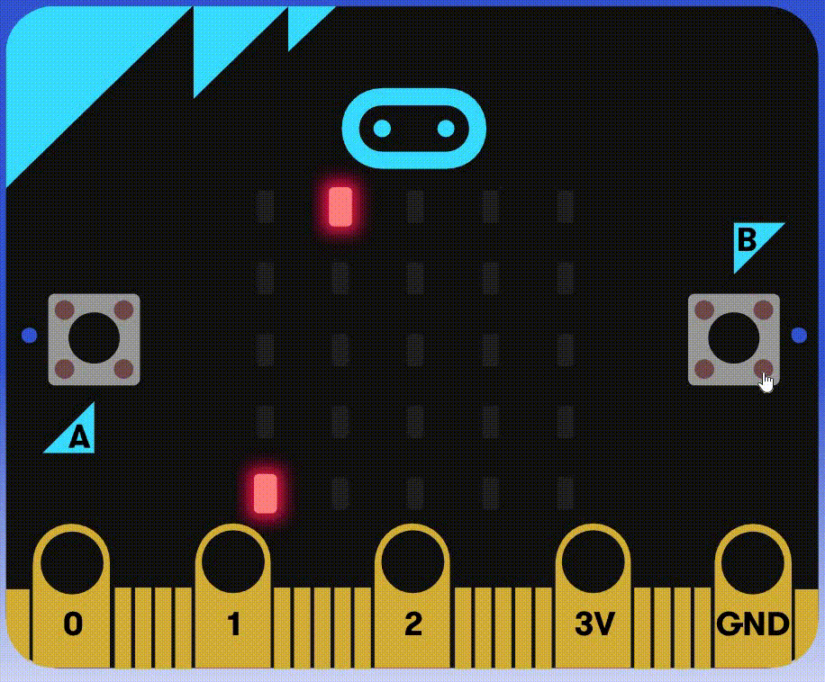
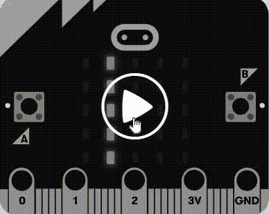
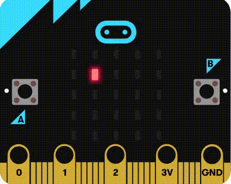
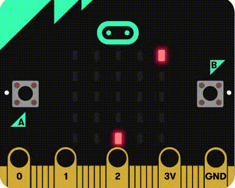
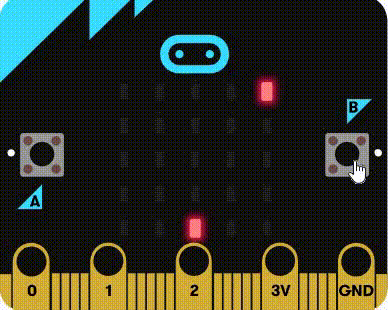

Catch the fruit¶
Introduction¶
Dans ce TP, nous allons programmer un petit jeu sur micro:bit grâce au langage python. Le micro:bit est un ordinateur minimaliste qui prend la forme d’une carte sur laquelle on trouve, entre autres, un écran de diodes lumineuses et deux boutons.

Le but de l’activité est de programmer un jeu appelé catch the fruit.
L’idée est d’utiliser la matrice de 25 leds du micro:bit comme écran sur lequel un fruit représenté par 1 led va tomber du haut de l’écran et qu’il faudra rattraper dans un panier. Le panier sera déplaçable à l’aide des boutons A et B.

Mise en place¶
Etapes à programmer¶
Voici les différentes étapes que nous allons suivre afin de programmer le jeu:
Faire tomber un fruit du haut de l’écran
Déplacer le panier à l’aide des boutons
Détecter lorsqu’un fruit est attrapé (i.e. collision fruit-panier)
Gestion des échecs (i.e. fruit n’est pas attrapé)
Fin du jeu et affichage du score
Étape 1 - Faire tomber un fruit¶
Nous allons programmer un fruit qui tombe sur une des 5 colonne choisie aléatoirement.
Dans le code fourni, vous trouverez 3 fonctions à compléter:
on_button_pressed_a: cette fonction est appelée lorsque le boutonAest pressé.on_button_pressed_b: cette fonction est appelée lorsque le boutonBest pressé.on_forever: cette fonction est appelée en boucle.
Exercice 1¶
Chaque led possède des coordonnées x et y. Le led tout en haut à gauche se trouve aux coordonnées (0, 0) tandis que celui tout en bas à droite se trouve aux coordonnées (4, 4).
Nous allons commencer par faire tomber le fruit sur la colonne en x=1, c’est à dire la 2ème colonne en partant de la gauche.
Dans la fonction on_forever, ajoutez 5 instructions pour allumer les leds de la colonne en x=1.
Ajoutez des instructions pause pour ralentir la chute du fruit.

Exercice 2¶
Ajoutez à présent 5 instructions éteindre pour allumer et éteindre successivement toutes les leds de la colonne du haut vers le bas.

Exercice 3¶
En regardant de plus près les blocs utilisés, on remarque la répétition des 3 mêmes instructions : allumer, pause et éteindre. Chaque instruction est répété 5 fois.
Quand on a une répétition d’instructions, on veut utiliser une boucle !
L’idée est donc d’utiliser une boucle qui va répéter les instructions tout en augmentant y de 1 à chaque tour afin de faire tomber le fruit.
Utilisez une boucle for pour répéter les 3 instructions allumer, pause et éteindre 5 fois en augmentant la valeur de y à chaque tour.
Visuellement, le résultat doit être le même que précédemment, mais le code est plus court et plus lisible.
Exercice 4¶
Le fruit tombe toujours dans la même colonne (x=1), on veut changer aléatoirement de colonne pour chaque fruit.
Donc au lieu que la coordonnée x soit fixée à 1, on veut qu’elle soit choisie aléatoirement avant de faire tomber le fruit.
Déclarez une variable colonne et initialisez-la à une valeur aléatoire entre 0 et 4 grâce à la fonction randint du module Maths.
Utilisez ensuite cette variable colonne pour faire tomber le fruit dans la bonne colonne.

Étape 2 - Déplacer le panier¶
Nous allons programmer le panier qui se déplace de droite à gauche à l’aide des boutons A et B.
Exercice 5¶
Pour commencer il faut choisir comment sera représenté le panier. Nous utiliserons 1 seule led sur la ligne tout en bas (coordonnée y à 4).
Définissez une variable panier pour la coordonnée horizontale du panier qui va varier et initiez-la à 2 au début du programme (en dehors des fonctions).
N’oubliez pas d’allumer les leds correspondantes, sinon on ne verra pas le panier !

Exercice 6¶
Le panier est fixe, il faut le faire bouger.
Nous allons utiliser les boutons A et B pour les déplacements gauche et droite, respectivement.
Dans les fonctions on_button_pressed_a et on_button_pressed_b, ajoutez des instructions pour déplacer le panier à gauche et à droite.
Pour rappel, il faut donc modifier la variable panier et mettre à jour les leds correspondantes.
Attention
Pour pouvoir modifier la variable panier dans les fonctions on_button_pressed_a et on_button_pressed_b, il faut la déclarer comme globale dans ces fonctions.
Ajoutez donc l’instruction global panier au début de ces fonctions.

Exercice 7¶
Si on appuie de nombreuses fois sur le bouton A ou B, le panier disparait, il sort de l’écran !
On doit empêcher le panier d’aller plus loin que les bords de l’écran.
Utilisez des instructions conditionnelles (if) pour empêcher le panier de sortir de l’écran.
Plus précisément, si le panier est à la colonne 0, il ne doit pas pouvoir aller plus à gauche, et si le panier est à la colonne 4, il ne doit pas pouvoir aller plus à droite.

Étape 3 - Détecter lorsqu’un fruit est attrapé¶
Exercice 8¶
Il s’agit maintenant de détecter lorsque le fruit est attrapé par le panier, c’est-à-dire lorqu’il y a collision entre le fruit et le panier.
Visuellement il est facile de voir quand le fruit tombe dans le panier, mais comme le micro:bit ne voit pas, il faut trouver un moyen pour qu’il puisse vérifier s’il y a collision ou non.
Pour cela, on va utiliser les coordonnées du fruit et du panier. Il y a collision lorsque le fruit est arrivé en bas de l’écran (coordonnée y à 4) et que sa colonne est la même que celle du panier.
Juste après la boucle for faisant tomber le fruit, ajoutez un if pour faire le test de collision.
En cas de collision, le jeu doit réagir de la manière suivante:
Afficher une icône (par exemple un coeur) pour signaler que le fruit a été attrapé (onglet BASE).
Effacer l’écran pour enlever l’icône (onglet BASE).
Réafficher le panier pour qu’il soit visible.

Exercice 9¶
On veut maintenant compter le nombre de fruits attrapés, c’est-à-dire le score du joueur !
Déclarez une variable score et initialisez-la à 0 au début du programme (en dehors des fonctions).
Faites en sorte que ce score augmente de 1 à chaque fois qu’un fruit est attrapé.
Attention
Pour pouvoir modifier la variable score dans la fonction on_forever, il faut la déclarer comme globale dans cette fonction.
Ajoutez danc l’instruction global score au début de cette fonction.
Visuellement, il n’y a aucune différence à la fin de cette étape.
Étape 4 - Gestion des échecs¶
Exercice 10¶
Un échec se produit lorsqu’un fruit finit sa chute en dehors du panier. Dans ce cas, le joueur perd une vie.
Déclarez une variable vie et initialisez-la à 3 au début du programme (en dehors des fonctions).
Ajoutez un bloc else à la suite du bloc if de la collision. Ce bloc est exécuté si la condition de collision n’est pas respectée, c’est-à-dire si le fruit est arrivé en bas de l’écran mais n’est pas dans le panier.
En cas d’échec, le jeu doit réagir de la manière suivante:
Diminuer le nombre de vies de 1.
Afficher une icône (par exemple un crâne) pour signaler que le fruit n’a pas été attrapé.
Effacer l’écran pour enlever l’icône.
Réafficher le panier pour qu’il soit visible.

Étape 5 - Fin du jeu¶
Exercice 11¶
Le jeu est maintenant fonctionnel, on marque des points lorsqu’un fruit est attrapé et on perd une vie quand on le rate ! Cependant, le jeu ne s’arrête pas même si on a perdu toutes nos vies.
Nous allons donc faire s’arrêter le jeu lorsque la vie du joueur passe à 0, puis nous afficherons le score.
Une manière simple de faire cela est d’ajouter une condition dans le bloc on_forever qui teste si le joueur a encore des vies. Si c’est le cas, le jeu se déroule normalement, sinon on affiche le score (onglet BASE).

Pour aller plus loin (bonus facultatif)¶
Pour rendre le jeu plus intéressant, voici une liste de suggestions:
Augmenter la vitesse de chute des fruits après un certain nombre de points
Ajouter des bruitages pour signaler la collision ou l’échec
Faire tomber de manière aléatoire des fruits pourris / bombes qui font perdre une vie si atttrapés (on peut jouer avec la luminosité pour faire la distinction)
Faire déplacer le panier en inclinant la carte micro:bit à gauche ou à droite au lieu des boutons A et B
Faire tomber plusieurs fruits en même temps
Faire tomber certains fruits légèrement en diagonal
Elargir le panier à 2 leds
Etc…